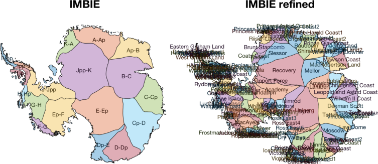
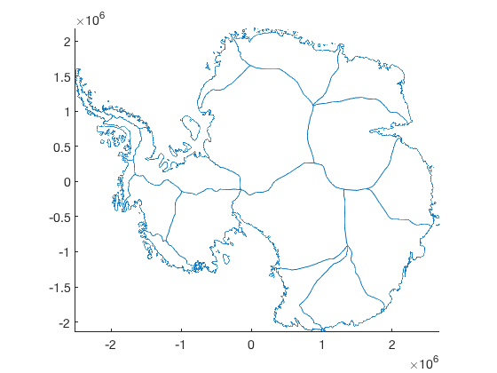
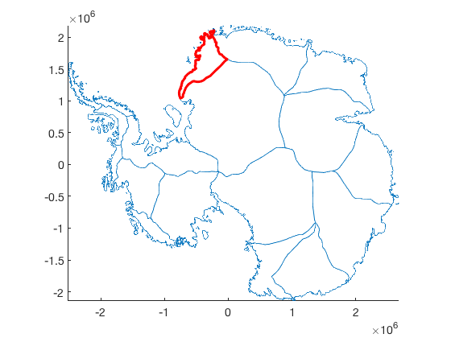
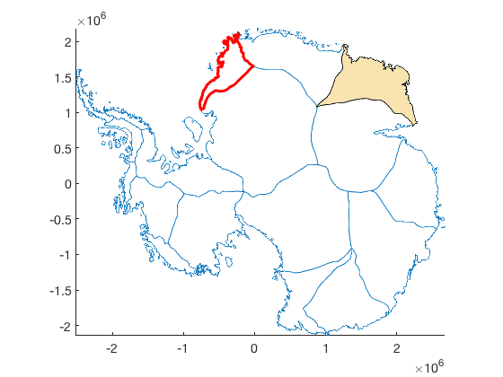
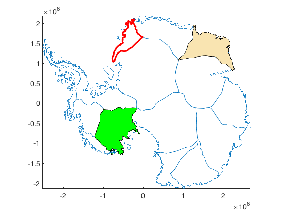
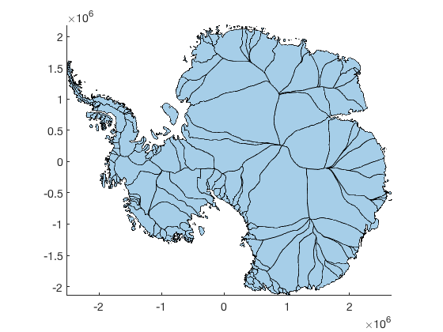
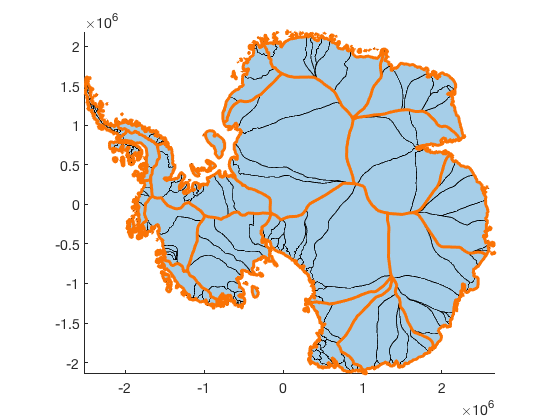
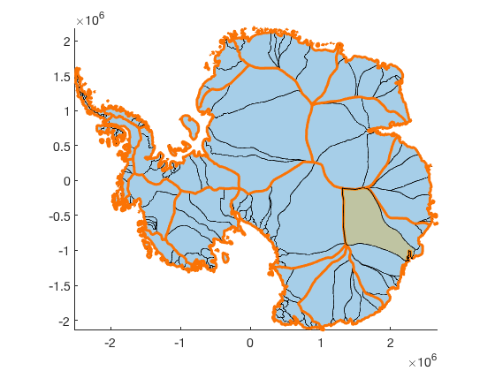

plot_basins documentation
plot_basins plots Antarctic drainage basins on a ps71 map. These are the IMBIE or IMBIE Refined basins in the MEaSURES Antarctic Boundaries for IPY 2007-2009 from Satellite Radar dataset Version 2.
The Antarctic Boundaries dataset is described on the NSIDC site here. An overview of the tools in this AMT plugin can be found here.
(For Zwally's basins instead use basinsps.)

Contents
Syntax
plot_basins(basinDataset)
plot_basins(basinDataset,'basin',BasinName)
plot_basins(...,PropertyName,PropertyValue,...)
plot_basins(...,'polyshape')
plot_basins(...,'km')
plot_basins('demo')
h = plot_basins(...)Description
plot_basins(basinDataset) plots either 'imbie' or 'imbie refined' basins. (For Zwally's basins instead use basinsps.)
plot_basins(basinDataset,'basin',BasinName) plots a single basin by name. For a visual depiction of basin names, type plot_basins('demo').
plot_basins(...,PropertyName,PropertyValue,...) specifies line or patch properties.
plot_basins(...,'polyshape') plots outlines as filled polyshape (patch) objects rather than the default line objects.
plot_basins(...,'km') plots in polar stereographic kilometers rather than the default meters.
plot_basins('demo') creates a figure like the one above, showing labeled IMBIE and IMBIE refined basins.
h = plot_basins(...) returns a handle h of plotted object(s).
IMBIE Examples
Plot the original 19 IMBIE basins:
plot_basins('imbie')
 Overlay the K-A basin outlined in thick red:
plot_basins('imbie','basin','K-A','linewidth',3,'color','r')
If you have Matlab R2017b or later, you can use the 'polyshape' option to create filled patch areas. Let's fill in the Ap-B basin:
plot_basins('imbie','basin','Ap-B','polyshape')
Same as above, but specify patch properties rather than using the defaults:
plot_basins('imbie','basin','Ep-F','polyshape',... 'facecolor','green','facealpha',1)
IMBIE Refined Examples
The 199 IMBIE refined basins are named a bit more intuitively than the standard IMBIE basins, and can be used to investigate processes for a single glacier. Let's make a new figure and take a look at the refined IMBIE basins:
figure plot_basins('imbie refined','polyshape')
And to see how they align with the original IMBIE basins, overlay the originals in thick orange lines:
plot_basins('imbie','linewidth',3,'color',[.98 .45 .02])
And just for good measure we'll highlight the Totten basin:
plot_basins('imbie refined','polyshape','basin','totten')
Citing this dataset
If you use this dataset, please cite the following:
- The dataset: Mouginot, J., B. Scheuchl, and E. Rignot. 2017. MEaSUREs Antarctic Boundaries for IPY 2007-2009 from Satellite Radar, Version 2. [Indicate subset used]. Boulder, Colorado USA. NASA National Snow and Ice Data Center Distributed Active Archive Center. http://dx.doi.org/10.5067/AXE4121732AD.
- Literature citation: Rignot, E., S. S. Jacobs, J. Mouginot, and B. Scheuchl. 2013. Ice-shelf melting around Antarctica, Science. 341. 266-270. http://dx.doi.org/10.1126/science.1235798.
- Antarctic Mapping Tools: Greene, C. A., Gwyther, D. E., & Blankenship, D. D. Antarctic Mapping Tools for Matlab. Computers & Geosciences. 104 (2017) pp.151-157. doi:10.1016/j.cageo.2016.08.003.
Author Info
This function and supporting documentation were written by Chad A. Greene of the University of Texas Institute for Geophysics (UTIG), May 2018.